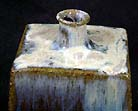

| Shodai-yaki
Article by Robert Yellin, e-yakimono

Shodai-yaki
takes its name from Mt.Shodai (Arao City, Kumamoto Prefecture) where
the indigenous clay has a rich iron-content, perfect for sturdy
pottery. Kilns in the area do date back to the Heian and Nara periods
when there were about 100 sueki style kilns.
During the 'Pottery Wars' between 1592-98, Korean potters were
captured, or willingly came, to Japan at the end of the 16th century
and established various kilns under local daimyo rulers. For Shodai-yaki,
the Kumamoto ruler was Kato Kiyomasa These various kilns--such as
Hagi--were under direct control of local daimyo and served as way
to establish their Tea name as well as to bring tax revenues into
the fief. Shodai uses, as mentioned, iron-rich clay over which a
dark brown iron glaze is applied, and then over it rice-straw ash-glaze
is either ladled or dramatically dripped on.

Above: Ko-shodai platter/Fukuda Kakue bottle
In the book Folk Kilns ll (Kodansha, 1981) Okamura Kichiemon
writes that, "During the middle of the Edo period (eighteenth
century), a number of Kyushu kilns developed the technique of pouring
an ash glaze over the iron-bearing clay body and then tradition
has survived is Shodai." The glaze colors on Shodai run from
ivory white to energetic ambers to namako purplish blues; the ranges
of colors are truly captivating. In the past Shodai-yaki was also
known as Hinnokoji-yaki, Gotoku-yaki or Matsukaze-yaki.
above: Shodai kiln interior
Shodai,
like many other 'folk' kilns, has had a hard time to meet the changing
times. With daimyo protection there really were no worries, yet,
as with everything, that did not last long. Shodai had to compete
against porcelain from Arita and Imari, which was not easy, as these
wares were viewed as more 'sophisticated' than 'dirty' stoneware
clay jugs. At one time in the early 20th century the flames no longer
burned for Shodai, the tradition was literally extinct. After WWll
though a few potters rekindled the flames, mainly Chikashige Jitaro.
At present there are 12 active kilns. All of the kilns stamp or
sign their works Shodai to show unity and also to make folks aware
that Shodai is alive and well! It is, without doubt, one of the
most important mingei kilns Japan has ever known.
The
eStore
is offering works from five of the current Shodai kilns and these
are the Fumoto
kiln (Inoue Taishu), the Mizuho
kiln (Fukuda Loui), Taihei kiln (Sakai Hiroki), Iisaki
kiln (Yamaguchi Kozo) and Takemiya
kiln (Chikashige Jitaro ll). I did visit other kilns yet
some were in between firings and there was thus little work available,
or for some reason I just did not connect with the pieces. In any
event, we hope you enjoy another world's first online: the simple,
deep beauty of Shodai-yaki.
Article and images courtesy Robert
Yellin. ©
More
information: Shodai-yaki Pottery & Kilns
More Articles
|
{kind=link}
{kind=link}
{kind=link}
{kind=link}
{kind=link}
{kind=link}
{kind=link}